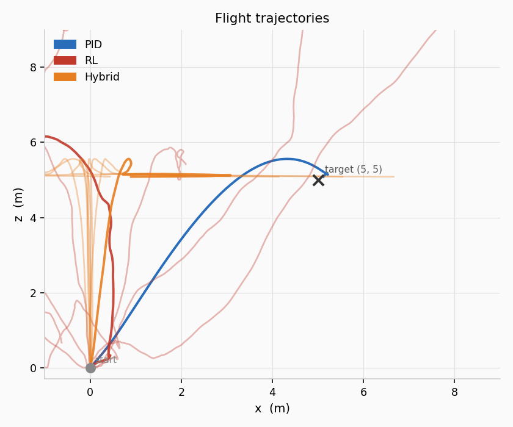
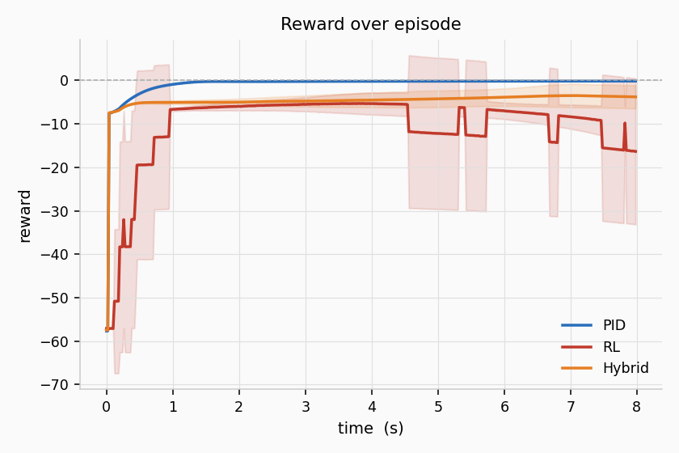
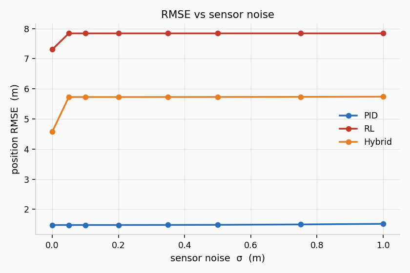

Two implementations of the same idea: a drone that takes off from the ground and holds a target altitude of 5 metres using a PID controller. One is a 3D animated simulation in GNU Octave; the other is a 2D Python benchmark that compares PID against two learned controllers.
Full rigid-body physics, animated blades and thrust arrows,
homogeneous transforms. Run with octave main.m.
Simplified drone physics. Runs PID, RL, and a Hybrid controller and measures how each one performs across noise levels.
The same control structure is used in both implementations. Each timestep:
Δw is added to the hover speed for all four motors uniformly (throttle channel).
The hover speed is derived analytically: w_hover = sqrt(m·g / 4k) ≈ 11.07 rad/s.
The integral term removes steady-state offset; the derivative damps oscillation.
| Gain | Value | Role |
|---|---|---|
| Kp_z | 1.5 | Proportional — how hard to push toward target |
| Ki_z | 0.3 | Integral — removes steady-state hovering error |
| Kd_z | 2.5 | Derivative — damps overshoot on the way up |
The Octave version also stabilises roll, pitch, and yaw to zero using a PD attitude controller on top of the altitude PID.
The drone starts at (5, 5, 0) and climbs to z = 5.0. The simulation
runs at 50 Hz (dt = 0.02 s). Geometry is handled with 4×4 homogeneous
transformation matrices — each frame, every body vertex and motor ring point is transformed
by T · R · local_point and the plot handles are updated in-place.
Physics: gravity, per-motor thrust (F = k·w²), linear and angular air drag,
forward Euler integration. Ground is clamped at z = 0.
main.m — loop
controller.m — PID + attitude PD
physics_step.m — equations of motion
drone.m — struct + initial draw
draw_drone.m — per-frame update
rotation3.m, translation3.m — transforms
X-cross drone wireframe
4 spinning motor rings (animated)
Thrust arrows, length ∝ w²
Body frame indicator (RGB arrows)
Ground-plane shadow at Z = 0
Fixed world frame at origin
The Python sim runs the same altitude task in 2D and compares three controllers over multiple episodes with varying sensor noise. PID is the clear winner so far.
| Controller | Final error (m) | RMSE | Safety violations | Settled |
|---|---|---|---|---|
| PID | 0.03 | 0.25 | 0 | 100% |
| RL | 4.9 | 2.5 | 42.8 avg | — |
| Hybrid | 6.7 | 5.9 | 15.3 avg | 0% |
RL and Hybrid are untrained placeholders at this stage — these numbers just show the baseline before any learning.


